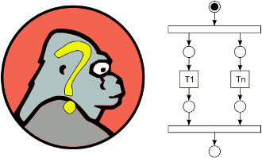

de.engehausen.kongcurrent.Monitor
de.engehausen.kongcurrent.Monitor
|
||||||||||
| PREV CLASS NEXT CLASS | FRAMES NO FRAMES | |||||||||
| SUMMARY: NESTED | FIELD | CONSTR | METHOD | DETAIL: FIELD | CONSTR | METHOD | |||||||||
java.lang.Object
public class Monitor
Helper to monitor parallel method invocations for exceptions.

The monitor creates a proxied version of an object implementing some interface (for classes: see below); the proxy can track invocations of the objects' methods and can report on potential concurrent access on the object. This can be used to help find out code paths that concurrently access the object (through the interface methods).
Here is a simple example code snippet that will be adapted to use the monitor:
List<String> myList = new ArrayList<String>(); processing(myList);Now you want to know what happens to the list when it is used in the
processing(List<String>) method. Instead of the
original list you simply pass the monitored version to the processing
method:
List<String> myList = new ArrayList<String>(); List<String> monitoredList = Monitor.monitor(myList, DefaultDescriptions.<String>listDescription(), new DefaultExceptionHandler()); processing(monitoredList);This code will create a monitored list based on the default description for
List objects; the default logger passed in will output to
System.out. The DefaultExceptionHandler will record the
stack traces of all callers and output these in case an exception occurs
during method invocation of a monitored method. Important: Keeping
track of this information is costly. The methods of the monitored
instance can be considerably slowed down; this can directly affect the
situation you try to analyze, up to the point where the situation you
try to understand does not happen any more. Please keep this in mind.
In case of a problem, e.g. a ConcurrentModificationException the
logger would output something similar to this:
exception occurred:
Thread[Thread-1,5,main] - java.util.ConcurrentModificationException
at java.util.AbstractList$Itr.checkForComodification(Unknown Source)
at java.util.AbstractList$Itr.next(Unknown Source)
at sun.reflect.GeneratedMethodAccessor2.invoke(Unknown Source)
at sun.reflect.DelegatingMethodAccessorImpl.invoke(Unknown Source)
at java.lang.reflect.Method.invoke(Unknown Source)
at de.engehausen.kongcurrent.Monitor$MonitorHandler.invoke(Monitor.java:124)
at $Proxy1.next(Unknown Source)
at Test.run(Unknown Source)
at java.lang.Thread.run(Unknown Source)
the following threads were recently operating on the object:
Thread[Thread-1,5,main] - java.lang.Exception: caller...
at $Proxy1.next(Unknown Source)
at Test.run(Unknown Source)
at java.lang.Thread.run(Unknown Source)
Thread[main,5,main] - java.lang.Exception: caller...
at $Proxy0.add(Unknown Source)
at Test.run(Unknown Source)
at java.lang.Thread.run(Unknown Source)
The output informs you that a ConcurrentModificationException
occurred in thread "Thread-1,5,main" while iterating the list. It also shows
you the stack traces of "recent" calls to the object. In there you find a thread
which added to the list (thread "main,5,main"), while the other one was iterating
the list - which explains why the exception occurred.
All this can be adapted to your needs. If you have a custom interface
to monitor, you will likely need to provide a Description for the
interface to monitor, which includes methods which may return "dependant"
objects (i.e. objects that somehow are backed by the monitored object).
If the object to monitor has special semantics you need to provide an
appropriate Comparator. For the Java collection objects default
descriptions and comparators exist (see DefaultDescriptions and
DefaultComparators).
To monitor non-interface based instances have a look at
the experimental MonitorCglib.
| Method Summary | ||
|---|---|---|
static
|
monitor(T target,
Description<T> description,
ExceptionHandler handler)
Creates a monitored version of the given target. |
|
protected static
|
monitorGeneric(T target,
Description description,
ExceptionHandler handler)
|
|
| Methods inherited from class java.lang.Object |
|---|
clone, equals, finalize, getClass, hashCode, notify, notifyAll, toString, wait, wait, wait |
| Method Detail |
|---|
public static <T> T monitor(T target,
Description<T> description,
ExceptionHandler handler)
T - the type of object to monitortarget - the instance to monitor, must not be null.description - a description of the interface, must not be null.handler - an exception handler that keeps track of invocations on the
proxied object; a single exception handler instance should be used per monitored
instance, or the handler must be capable of tracking different objects at the
same time.
null.
protected static <T> T monitorGeneric(T target,
Description description,
ExceptionHandler handler)
|
||||||||||
| PREV CLASS NEXT CLASS | FRAMES NO FRAMES | |||||||||
| SUMMARY: NESTED | FIELD | CONSTR | METHOD | DETAIL: FIELD | CONSTR | METHOD | |||||||||